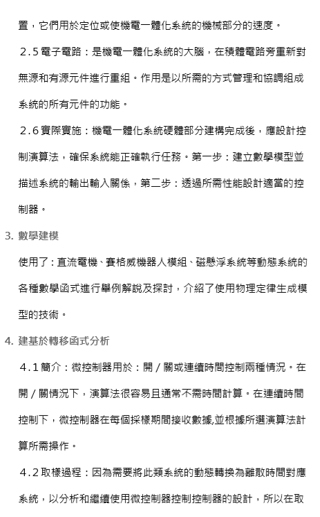

Week6-10 <<
Previous Next >> Week16-18
Week11-15
week11 利用ssh維護cd2020倉儲
1.將cd2020的.git資料夾裡的config拉進scite裡編輯，將原先url = https://github.com/個人github帳號/cd2020.git 前面上一個 # ，重新創建 url = git@github.com:個人github帳號/cd2020.git
2.將原先py373裡的putty放置新創建的py382資料夾下，將py373下home_mdecourse資料夾裡的.ssh資料夾複製到py382下
3.開啟putty.exe，load原先的github.com，如果是用學校電腦要去設定porxy為69，如果是用自己電腦就不需要設定proxy，打開ssh分支下的auth將金鑰路徑設定為cd2020倉儲下的金鑰位置
4.登陸putty，可以成功登陸後就可以試驗ssh有無成功
如果無法利用以上步驟直接設定ssh，可以參照http://mde.tw/wcmj2020/content/%E4%BB%A5%20SSH%20%E7%B6%AD%E8%AD%B7%E5%80%89%E5%84%B2.html 步驟重新設定一次新的ssh金鑰
week11 vrep虛擬主機設置
1.下載 virtualbox WINDOWS版，下載 ubuntu
2.開啟 virtualbox > 檔案 > 喜好設定 > 網路 > 新增一個nat網路，點選檔案 > 匯入應用裝置 > 匯入剛剛下載的 ubuntu
3.在匯入好的 ubuntu點選 設定 > 網路 > 僅限主機卡介面，完成後啟動
4.輸入密碼為kmol2020，點選 activities > 開啟LXTerminal > 輸入 xterm& > 輸入 ls > 輸入 cd coppeliasim4_rev4 > 輸入 ls > 輸入 cd CoppeliaSim_Edu_V4_0_0_Ubuntu18_04 > 輸入 ls
5.等它跑一段後輸入 ls -l > 輸入 ./coppeliaSim.sh 來開啟vrep
6.到file > open recent scene > sdc.ttt 檔即可
操作影片 : https://youtu.be/T2y29mgNzoM
week12 assidnment3
個人翻譯 MSModelingAndTFApproaches 50~81頁
翻譯pdf : 51~80翻譯
MSModelingAndTFApproaches pdf : MSModelingAndTFApproaches


MechatronicDesignCases pdf : MechatronicDesignCases

MechaFutureAndChallenges pdf : MechaFutureAndChallenges
MechaEducFutureNeed pdf : MechaEducFutureNeed
Week6-10 <<
Previous Next >> Week16-18